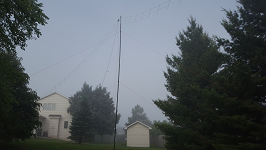
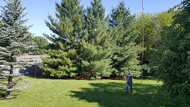
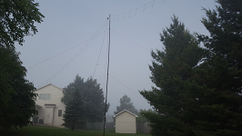
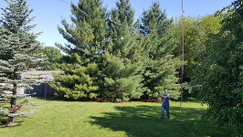

All antennas are still of a temporary nature. Because of that the antennas change quite a bit. This page gives only an idea of what antenna I'm currently using.
Thanks to the Icom AT-130 tuner I can work this antenna with ease on the whole HF spectrum. In the winter time I've been making many contacts on 160m with the antenna.
The photo gives an idea of where the wire (red) and tuner (orange) are locate. It's quite hard to see the wire going from the river birch to the pine tree. I attached a light weight string to a drone, flew it across the tree, and let the drone drop. With that process I got a rope over both trees with which I pulled up the wire. On a different long wire I used 14 gauge stranded electrical wire that evenually broke due to the sway and strain on the wire. For this installation I used a stainless steel wire and strong rope to hang it. In the river birch the wire goes through a stainless steel ring so the supporting rope would not break from the movement of the steel wire.
My first dipole antenna. I haven't made any contacts as I only got a lot of static on 10 meters. I upgraded the dipole by adding a home made 1:1 current balun and added a 20m dipole wire as well. Since then I have made a contact on 10m and may contacts on 20m. In fact this is my best 20m antenna which also has gotten me a contact with Cook Island.
I played with the 10m wires, shortening it to 6m but basically that was unsuccessfull and currently is not resonant on any frequency. However the 20m still goes strong. With recently aquired amplifier I hung that antenna up again and talked to two stations in South Africa using SSB

 



My first working HF antenna. The design is a parallel dipole antenna with the 80 meter being a folded dipole. The 80 meter wire turned out to be too short so only 20 and 40 meters are useful. Since I shorened the 20 meter insulated wire by folding it back on itself I can't use the 20m band when the antenna is wet. The SWR skyrockets. None the less the 20 and 40 meter band work quite well even at the antennas temporary location which is only 15 foot off the ground.
For portable operation, this antenna goes up to 60m. All the copper in the spool is quite heavy which needs to be considered when using higher frequencies. Removing the 60m support and going only up to 40m would help a lot. Then an extension could be added for 60m and 80m when desired. The antenna works supprisingly good.
Works great for portable operation when mounted on a windsock pole that is being held by a bicycle workstand (my tripod alternative).
I have a collection of ham sticks for 17m, 20m, and 40m that mount on my custom 3/8" x 24 treaded mount on the car roof.
For occasional vehicle usage. The antenna whistles in the wind, yes sometimes it's windy enough here that you hear it even when parked. Otherwise probably OK, although I haven't used it much.
To use my custom 3/8" X 24 treaded mount.
I have one for 2m and a cute little one for 70cm. They work great and get me to the repeater of the neighbouring town without a problem. I have used both of them quite often to join their weekly net. The antenna works great in fox hunts expecially with an attenuator.
Primarely for satellite work but I haven't done much of that.
I got the DP4-2 antenna with my first radio, the Icom IC-7300 from Ham Radio Outlet. It should have been a simple beginners antenna but the SWR is way off. It turns out that the inner wire between the balun and the traps is to short for the 20m band. Not something that's easily corrected. Needles to say I haven't used this antenna.


{kind=link}
{kind=link}
{kind=link}